1과목: 유통경영
1. 아래 글상자의 괄호 안에 들어갈 소비자행동 요인으로 가장 옳은 것은?
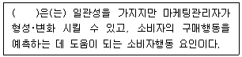
2. 마이클 포터(Michael Eugene Porter)의 본원적 가치사슬에 대한 설명으로 가장 옳지 않은 것은?
3. 아래 글상자에서 가치사슬 활동 중 본원적 활동의 주요 업무과정에 대한 설명으로 옳은 것을 모두 고르면?
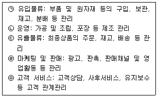
4. 국제표준화기구(ISO)에서 개발한 기업의 사회적 책임에 대한 표준인 ISO26000의 7대 원칙에 해당하지 않는 것은?
5. 자원기반이론은 기업의 경쟁우위와 성과가 기업 내부의 특정한 자원과 능력, 즉 핵심역량에 달려있다고 주장한다. 바니(J. Barney)가 제시한 핵심역량 여부를 평가하는 기준으로서 가장 옳지 않은 것은?
6. 종업원의 성과를 평가하기 위해 활용하는 다양한 방법들 중 비교를 통한 성과평가방법이 아닌 것은?
7. 기업의 다양한 성장전략에 대한 설명으로 가장 옳지 않은 것은?
8. 리더십에 관한 아래 글상자의 내용과 가장 관련이 깊은 사람은?
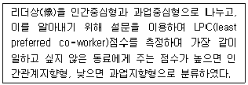
9. 유통기업의 전략계획 수립 시 기업의 핵심역량을 파악 하기 위해 기업 내부의 강점과 약점을 평가하는 단계의 주요 내용이 아닌 것은?
10. 아래 글상자에서 설명하는 기업구조조정행위로 가장 옳은 것은?
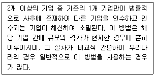
11. 아래 글상자에서 유통기업의 공식 조직과 비공식 조직의 특징을 비교 설명한 것으로 옳지 않은 것은?
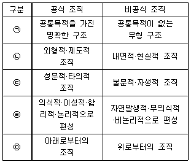
12. 한국형 국제회계기준(K-IFRS) 적용 기업에 의무적으로 적용되는 수익회계기준(K-IFRS 1115호)의 주요 내용 으로 가장 옳지 않은 것은?
13. 종업원에게 제공되는 각종 보상과 관련된 설명 중 가장 옳지 않은 것은?
14. 소매업체의 성과를 측정하는 지표에 대한 설명으로 옳지 않은 것은?
15. 기업의 자본을 충실하게 유지할 목적으로 상법의 규정에 의하여 강제적으로 기업이 적립하여야 하는 금액으로 옳은 것은?
16. 아래 글상자에서 인적자원관리와 관련된 세부과정의 내용으로 옳은 것을 모두 고르면?
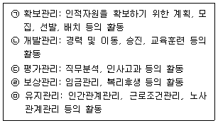
17. 소비자기본법(법률 제20301호, 2024. 2. 13., 일부개정)에 따라 아래 글상자의 괄호 안에 들어갈 기관으로 옳은 것은?
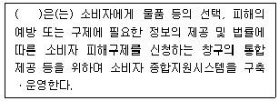
18. 일정 기간 동안 기업의 경영 규모나 성과가 얼마나 증가 했는지를 나타내는 비율인 성장성 비율과 관련된 설명 으로 가장 옳지 않은 것은?
19. 조직화의 기본 원칙 중 계층제의 원칙과 관련되어 옳은 설명만을 나열한 것은?
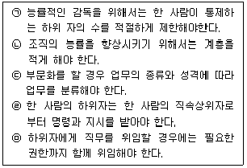
20. 유통산업발전법(법률 제20444호, 2024. 9. 20., 일부 개정)에서 정의하는 체인사업으로 옳지 않은 것은?
2과목: 물류경영
21. 아래 글상자 내용이 설명하는 물류시스템은?
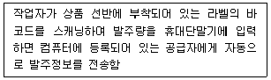
22. 아래 글상자에서 JIT와 JITⅡ의 차이점 설명으로 옳은 것을 모두 고르면?
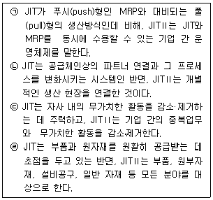
23. 아래 글상자에서 설명하는 내용으로 가장 옳은 것은?
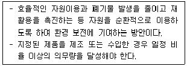
24. 아래 글상자의 괄호 안에 들어갈 복합수송 방식을 순서대로 바르게 나열한 것은?
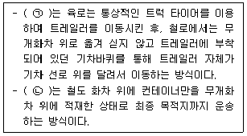
25. 간이기준 물류비계산방식에서, 판매비 및 일반관리비에 속하는 물류비 산정 기준에 대한 설명으로 가장 옳지 않은 것은?
26. 물류활동 기준 원가계산의 기본 요소에 대한 설명으로 옳지 않은 것은?
27. 아래 글상자에서 설명하는 물류조직으로 가장 옳은 것은?
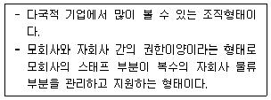
28. 해상운송에서 선사나 선주가 편의치적제도(FOC: flag of convenience)를 이용하는 이유로 가장 옳지 않은 것은?
29. 재고에 관한 설명으로 가장 옳지 않은 것은?
30. QR(quick response)시스템에 대한 설명으로 옳지 않은 것은?
31. 국제물류와 국내물류의 성격과 특성을 비교한 내용 중 에서 가장 옳지 않은 것은?
32. 운송과 보관에 수반하여 발생하는 작업인 하역합리화의 원칙 및 효과에 대한 내용으로 가장 옳지 않은 것은?
33. 제품에 대한 소유권을 가지고 거래를 하는 상인도매상의 유형을 완전기능도매상과 한정기능도매상으로 구분할 때 다음 중 한정기능도매상만으로 옳게 나열한 것은?
34. 보관의 기능에 대한 설명으로 옳지 않은 것은?
35. 아래 글상자에서 WMS(Warehouse Management System)의 수준별 정의에 대한 설명으로 옳은 것을 모두 고른 것은?
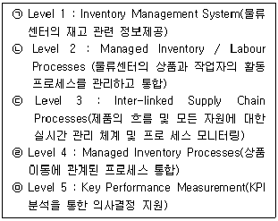
36. 아래 글상자에서 다양한 도매상의 기능 중 제조업자를 위한 기능만을 모두 골라 나열한 것으로 옳은 것은?
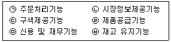
37. 물류시설에 대한 설명 중에서 옳지 않은 것은?
38. 아래 글상자의 위험물 운송에 관한 UN권고(UN Recommendation on the Transport of Dangerous goods, 일명 Orange Book) 중 위험물 분류 구분으로 옳은 것을 모두 고르면?
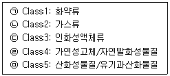
39. 아래 글상자의 내용 중 SCE(Supply Chain Execution)에 속하는 시스템만을 모두 고르면?
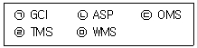
40. 수배송 공동화 필요성에 관한 설명으로 가장 옳지 않은 것은?
3과목: 상권분석
41. 소비자의 소비행동 변화가 소매상권의 범위에 미치는 영향과 관련된 아래의 내용 중에서 가장 옳지 않은 것은?
42. 광범위한 지역에 복수의 매장이나 시설 네트워크를 계획 하는 데 유용하게 활용할 수 있는 커버링모형(covering model)에 대한 내용으로 옳지 않은 것은?
43. 소매업의 공간적 분포와 관련된 아래의 설명 중에서 옳지 않은 것은?
44. 재무적 제약이 낮은 가맹본부가 배타적 영업지역을 보장한 계약이 없다면 경제적 차원에서 개별상권에 개점할 직영점포의 숫자를 결정하는 합리적인 원칙으로서 가장 옳은 것은?
45. 다음 중 상권조사에 관한 설명으로서 가장 옳지 않은 것은?
46. 기존점포나 신규점포의 입지타당성을 분석할 때는 해당 상권이나 배후지역의 인구 변화를 추정할 필요가 있다. 이때 활용하는 다양한 수리적 모형들은 각각 상이한 변화의 형태를 가정하며 곡선의 형태도 다르다. 아래 글상자의 내용과 가장 가까운 모형으로 옳은 것은?
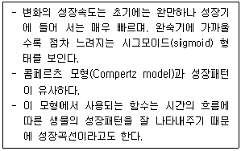
47. 아래 글상자의 내용은 Huff 모델을 활용하여 신규점포에 대한 각 지역(zone)의 예상매출액을 구하는 공식이다. 괄호 안에 들어갈 용어로 옳은 것은?
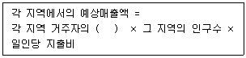
48. 점포의 입지를 결정하는 과정에서 부지 특성이나 건물 구조 등과 관련한 구체적인 입지조건을 평가하는 내용 으로 가장 옳지 않은 것은?
49. 소비자의 이질성 때문에 공간상호작용모델의 모수들이 공간적으로 차이나는 것을 의미하는 공간적 불안정성 (spatial non-stability)과 관련된 내용으로 보기 어려운 것은?
50. “국토의 계획 및 이용에 관한 법률 시행령”(대통령령 제 35628호, 2025. 7. 1., 일부개정)에서 규정하고 있는 상업지역의 구분과 관련한 내용으로 옳지 않은 것은?
51. 소매입지를 결정할 때 단일점포입지를 결정하는 방법과 다점포입지를 결정하는 방법이 있다. 다점포의 입지 즉, 점포네트워크를 결정하는 데 활용하는 방법만을 나열한 항목으로 옳은 것은?
52. 상권구획모형의 일종인 티센다각형(thiessen polygon) 기법에 대한 설명으로 가장 옳지 않은 것은?
53. 소매점포 상권의 범위나 형태에 대한 분석과정이나 분석 결과에서 발견되는 일반적 내용으로서 가장 옳지 않은 것은?
54. 소매점을 건축하는 경우, “건축법 시행령”(대통령령 제 35449호, 2025. 4. 15., 일부개정)의 규정을 근거로 용적률을 산정할 때 연면적에서 제외되는 항목으로 옳지 않은 것은?
55. 다음 중 복합용도개발지역의 특성이나 개발에 관한 설명 으로 가장 옳지 않은 것은?
56. 소매점 상권의 매력성을 측정하는 소매포화지수(IRS)와 시장성장잠재력지수(MEP)에 대한 설명으로서 가장 옳지 않은 것은?
57. Huff모델에서 상권분석 결과를 이용한 상권표현의 도구로 활용할 수 있는 점포선택 등확률선에 대한 설명으로 옳지 않은 것은?
58. 다양한 상권분석기법의 토대를 제공한 크리스탈러(W. Christaller)의 중심지이론(central place theory)의 전제 조건을 설명한 내용으로 옳지 않은 것은?
59. 대형 쇼핑센터의 공간구성요소에 대한 설명으로 가장 옳은 것은?
60. 상권조사과정에서 활용하는 확률분석모델들은 직접 소비 자를 대상으로 조사하여 보다 더 시장상황을 정확히 반영 하는 과학적 분석도구로 알려져 있는데 이와 관련한 설명 으로 옳지 않은 것은?
4과목: 유통마케팅
61. 온라인에서 사용자가 노출된 광고를 클릭하고 랜딩 페이 지에 진입하여 광고주가 원하는 특정 행위를 한 경우 과금하는 방식으로, 획득 당 비용을 나타내는 단위로 옳은 것은?
62. 아래 글상자의 사례가 설명하는 시장세분화 변수로 옳은 것은?
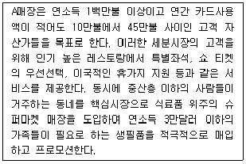
63. 시장세분화를 통해 목표시장을 설정할 때, 가장 옳지 않은 것은?
64. 다음 중 포지셔닝의 기본 원칙과 그 설명으로 가장 옳지 않은 것은?
65. 다음 중 매장의 손익 관련 주요 계정의 산출식으로 옳은 것은?
66. 아래 글상자에서 설명하는 가격전략에 대한 내용으로 가장 옳지 않은 것은?
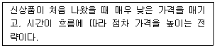
67. 소매업의 매입방식에 대한 설명으로 가장 옳지 않은 것은?
68. 검색 엔진 최적화(SEO)에 대한 설명으로 가장 옳지 않은 것은?
69. 아래 글상자에서 설명하고 있는 ToMoBoFu 단계로 옳은 것은?
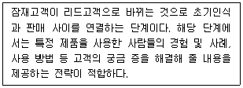
70. 아래 글상자의 괄호 안에 들어갈 용어로 가장 옳은 것은?
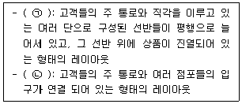
71. 다음 중 로열티 프로그램에 대한 설명으로 가장 옳지 않은 것은?
72. 재고의 기능으로 가장 옳지 않은 것은?
73. 다음 중 온라인 광고 유형과 그에 대한 설명으로 옳지 않은 것은?
74. SKU(stock keeping unit)에 대한 설명으로 옳지 않은 것은?
75. 유통업체상표(PB: private brand) 도입을 활발하게 하는 원인들을 모두 고르면?
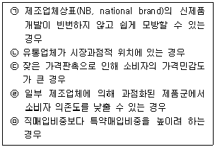
76. 서비스의 특성에 따른 문제점과 대응전략으로 옳은 것만을 모두 나열한 것은?
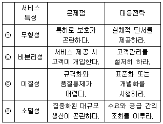
77. 다음 중 O2O(Online to Offline) 서비스에 대한 설명으로 가장 옳지 않은 것은?
78. 다음 중 실행주체가 다른 촉진기법으로 가장 옳은 것은?
79. 아래 글상자가 설명하는 사인물(signage) 유형으로 가장 옳은 것은?
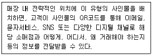
80. 다음 중 공급자주도 재고관리(VMI)에 대한 설명으로 가장 옳지 않은 것은?
5과목: 유통정보
81. 정보공유를 위해 사용하는 방식과 관련된 내용으로 가장 옳지 않은 것은?
82. 다음 개인정보보호법과 관련된 설명으로 가장 옳지 않은 것은?
83. 인공지능(AI)의 분류 및 설명으로 가장 옳은 것은?
84. 구매전환 이후 단계까지 확장된 마케팅 퍼널(marketing funnel) 확장 모델에서 아래 글상자가 설명하는 단계로 가장 옳은 것은?
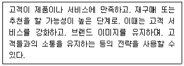
85. OECD 프라이버시 8대 원칙에 대한 설명으로 가장 옳지 않은 것은?
86. GTIN-13(표준형 상품식별코드) 체계에 대한 설명으로 가장 옳지 않은 것은?
87. 아래 글상자의 유통정보시스템 구축 사례 중 괄호 안에 들어갈 용어로 가장 옳은 것은?
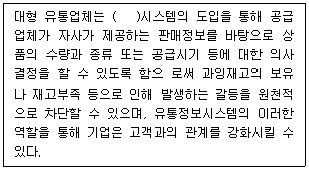
88. 아래 글상자에서 스마트물류를 위한 자율주행기술에 대한 설명이 옳은 것끼리 짝지어진 것은?
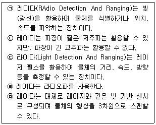
89. 유통업체에서 마케팅을 위해 소비자 개인의 다양한 정보를 활용한다. 개인정보보호를 위한 필수 조치사항으로 가장 옳지 않은 것은?
90. 유통업체에서 활용하는 RFID(Radio-Frequency Identification)에 대한 설명으로 옳지 않은 것은?
91. 최근 유통업체에서의 보다 효율적인 업무처리를 위해 인공지능과 같은 첨단기술 활용이 증가하고 있다. 이에 대한 설명으로 가장 옳지 않은 것은?
92. 유통업체에서 ERP 시스템 구축과정에서 컨설턴트를 활용 하고자 할 때, 컨설턴트 활용 방법에 대한 설명으로 가장 옳지 않은 것은?
93. ERP시스템에 관한 설명으로 가장 옳지 않은 것은?
94. 아래 글상자에서 설명하는 초거대 AI 기술로 가장 옳은 것은?
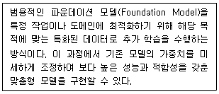
95. CRM의 본질적인 역할을 수행하기 위해 고려할 수 있는 요소로 아래 글상자의 괄호 안에 들어갈 용어로 가장 옳은 것은?
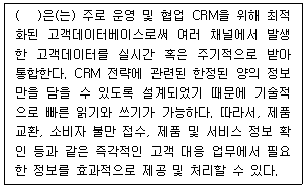
96. 아래 글상자는 A유통업체가 개인정보활용과 관련하여 정리해 놓은 글이다. 밑줄 친 부분과 관련 있는 개념 으로 가장 옳은 것은?
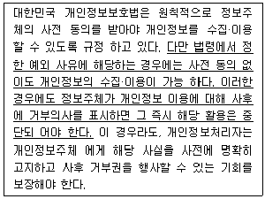
97. 유통정보시스템을 구축하고자 한다. 소프트웨어개발생명 주기(SDLC)에 따른 활동으로 가장 옳지 않은 것은?
98. 아래 글상자에서 전자상거래 보안을 위한 비밀키 암호방식의 특징을 모두 나열한 것으로 가장 옳은 것은?
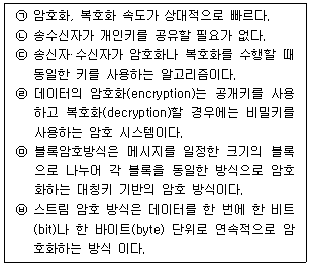
99. 아래 글상자의 괄호 안에 들어갈 용어로 가장 옳은 것은?
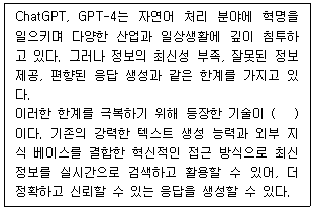
100. 스마트물류에서 거래 추적 및 위변조 확인 등을 투명하게 관리하면서 품질 향상, 공급망 관리 등을 가능하게 해주는 기술로 가장 옳은 것은?